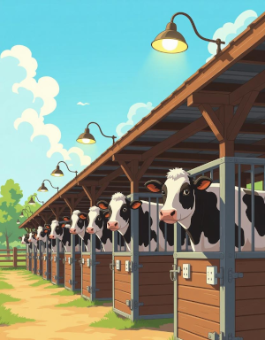

Submit on Mooshak Weekly Problems #04
This problem is a Mooshak version of a SPOJ problem.

Farmer John tries to keep the cows sharp by letting them play with intellectual toys. One of the larger toys is the lights in the barn. Each of the \(n\) cow stalls conveniently numbered \(1 \ldots n\) has a colorful light above it.At the beginning of the evening, all the lights are off. The cows control the lights with a set of \(n\) pushbutton switches that toggle the lights; pushing switch \(i\) changes the state of light \(i\) from off to on or from on to off.
The cows read and execute a list of \(m\) operations expressed as one of two integers: \(0\) or \(1\).
The first kind of operation (denoted by a \(0\) command) includes two subsequent integers \(s_i\) and \(e_i\) that indicate a starting switch and ending switch. They execute the operation by pushing each pushbutton from \(s_i\) through \(e_i\) inclusive exactly once.
The second kind of operation (denoted by a \(1\) command) asks the cows to count how many lights are on in the range given by two integers \(s_i\) and \(e_i\) which specify the inclusive range in which the cows should count the number of lights that are on.
Help Farmer John ensure the cows are getting the correct answer by processing the list and producing the proper counts.
Line \(1\): Two space-separated integers: \(n\) and \(m\).
Lines \(2\) to \(M+1\): Each line represents an operation with three space-separated integers: operation (\(0\) or \(1\)), \(s_i\), and \(e_i\).
| Example Input | Example Output |
|---|---|
4 5 0 1 2 0 2 4 1 2 3 0 2 4 1 1 4 | 1 2 |
Content by Pedro Ribeiro (DCC/FCUP), migrated from www.dcc.fc.up.pt/~pribeiro/aulas/pc2627/problems/pc019.html to demonstrate the UC Design Kit.